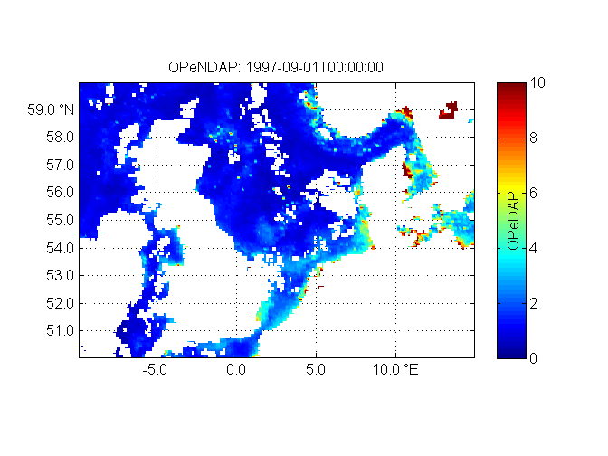
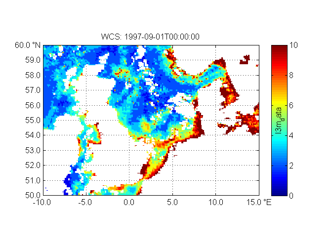
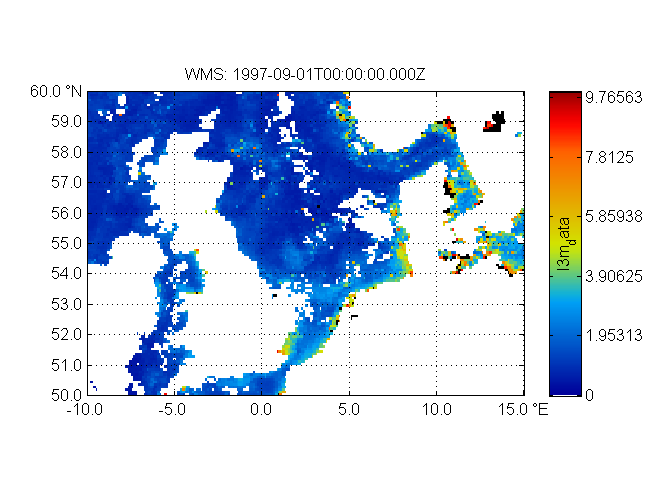

Contents
% Tutorial on how to work with different flavours of web services for Earth Obersvation data % 1. netCDF-CF-OPeNDAP using netcdf4 package % 2. OGC WMS using owslib package % 3. OGC WCS using owslib package % For overview see OpenEarrth.eu > Data % Image(url='https://publicwiki.deltares.nl/download/attachments/42401809/OpenEarthBuildingBlocks_standards_client_server.png bbox = [-10 50 15 60]; clim = [0 10];
1. OPeNDAP: query indices, generate matlab code
http://zandmotor.citg.tudelft.nl/netcdfreadersguide/
dap0 = 'http://thredds.jpl.nasa.gov/thredds/dodsC/ncml_aggregation/Chlorophyll/seawifs/aggregate__SEAWIFS_L3_CHLA_MONTHLY_9KM_R.ncml'; nc.lat = ncread(dap0, 'lat'); nc.lon = ncread(dap0, 'lon'); nc.time = ncread_cf_time(dap0, 'time'); ilon = find(nc.lon >= bbox(1) & nc.lon <= bbox(3)); ilat = find(nc.lat >= bbox(2) & nc.lat <= bbox(4)); itime = 1; nc.l3m_data = ncread(dap0, 'l3m_data', [ilon(1) ilat(1) itime], [length(ilon) length(ilat) 1], [1 1 1]); % slow: 2D
render OPeNDAP
figure('name','OPeNDAP') pcolorcorcen(nc.lon(ilon),nc.lat(ilat),nc.l3m_data') tickmap('ll');grid on; set(gca,'ydir','normal') caxis(clim) axislat title(['OPeNDAP: ',datestr(nc.time(itime),'yyyy-mm-ddTHH:MM:SS')]); [ax, h]=colorbarwithvtext('OPeDAP'); print2screensizeoverwrite(['OPeNDAP_plotted_',datestr(nc.time(itime),30)])
Warning: An empty directory name was given. No directory will be created. This syntax may not be supported in future releases.
2.WCS
https://publicwiki.deltares.nl/display/OET/WCS+primer
wcs0 = 'http://thredds.jpl.nasa.gov/thredds/wcs/ncml_aggregation/Chlorophyll/seawifs/aggregate__SEAWIFS_L3_CHLA_MONTHLY_9KM_R.ncml?' % service=WCS&version=1.0.0&request=GetCapabilities [url.wcs,OPT.wcs,lims.wcs] = wcs('server',wcs0,... 'axis',[-10 50 15 60],... 'format','GeoTIFF',.... 'time','1997-09-01T00:00:00Z'); dprintf(strrep(url.wcs,'&','\n&')) % http://thredds.jpl.nasa.gov/thredds/wcs/ncml_aggregation/Chlorophyll/seawifs/aggregate__SEAWIFS_L3_CHLA_MONTHLY_9KM_R.ncml? % &service=WCS % &version=1.0.0 % &request=GetCoverage % &bbox=-10,50,15,60 % &coverage=l3m_data % &format=GeoTIFF % &resx= % &resy= % &crs=OGC:CRS84 % &time=1997-09-01T00:00:00 wcsname = ['WCS_',OPT.wcs.coverage,'_',datestr(datenum(OPT.wcs.time,'yyyy-mm-ddTHH:MM:SS'),30),'.',OPT.wcs.format]; urlwrite(url.wcs,wcsname);
wcs0 =
http://thredds.jpl.nasa.gov/thredds/wcs/ncml_aggregation/Chlorophyll/seawifs/aggregate__SEAWIFS_L3_CHLA_MONTHLY_9KM_R.ncml?
used WxS cache:C:\Users\UYJ\AppData\Local\Temp\matlab.ows\\thredds_jpl_nasa_gov_thredds_wcs_ncml_aggregation_Chlorophyll_seawifs_aggregate__SEAWIFS_L3_CHLA_MONTHLY_9KM_R_ncml_service_WCS_version_1_0_0_request_GetCapabilities.xml
wxs:not valid: only valid option returned: l3m_data
used WxS cache:C:\Users\UYJ\AppData\Local\Temp\matlab.ows\\thredds_jpl_nasa_gov_thredds_wcs_ncml_aggregation_Chlorophyll_seawifs_aggregate__SEAWIFS_L3_CHLA_MONTHLY_9KM_R_ncml_service_WCS_version_1_0_0_request_DescribeCoverage_coverage_l3m_data.xml
OPT =
server: 'http://thredds.jpl.nasa.gov/thredds/wcs/ncml_aggregati...'
version: '1.0.0'
request: 'GetCoverage'
coverage: 'l3m_data'
axis: [-10 50 15 60]
bbox: ''
format: 'GeoTIFF'
crs: 'EPSG%3A4326'
resx: []
resy: []
interpolation: ''
time: '1997-09-01T00:00:00Z'
disp: 1
cachedir: 'C:\Users\UYJ\AppData\Local\Temp\matlab.ows\'
fixqmark: 1
wxs:validated: a format="GeoTIFF"
wxs:not valid: a crs="EPSG%3A4326", choose from valid options:
wxs:not valid: only valid option returned: OGC:CRS84
wxs:not valid: only valid option returned: none
http://thredds.jpl.nasa.gov/thredds/wcs/ncml_aggregation/Chlorophyll/seawifs/aggregate__SEAWIFS_L3_CHLA_MONTHLY_9KM_R.ncml?
&service=WCS
&version=1.0.0
&request=GetCoverage
&bbox=-10,50,15,60
&coverage=l3m_data
&format=GeoTIFF
&resx=
&resy=
&crs=OGC:CRS84
&time=1997-09-01T00:00:00render WCS
figure('name',OPT.wcs.coverage) [A,map,alpha] = imread(wcsname); A = double(A);A(A==0)=NaN; OPT.wcs.x = linspace(OPT.wcs.axis(1),OPT.wcs.axis(3),size(A,2)); OPT.wcs.y = linspace(OPT.wcs.axis(4),OPT.wcs.axis(2),size(A,1)); pcolorcorcen(OPT.wcs.x,OPT.wcs.y,double(A)) tickmap('ll');grid on; set(gca,'ydir','normal') axislat title(['WCS: ',OPT.wcs.time]); colorbar caxis(clim) [ax, h]=colorbarwithvtext(OPT.wcs.coverage); print2screensizeoverwrite(['WCS_plotted_',mkvar(OPT.wcs.time)])
Warning: An empty directory name was given. No directory will be created. This syntax may not be supported in future releases.
3.WMS: NB sometimes fails to to slow server rendering
https://publicwiki.deltares.nl/display/OET/WMS+primer
wms0 = 'http://thredds.jpl.nasa.gov/thredds/wms/ncml_aggregation/Chlorophyll/seawifs/aggregate__SEAWIFS_L3_CHLA_MONTHLY_9KM_R.ncml?'; % service=WMS&version=1.3.0&request=GetCapabilities [url.wms,OPT.wms,lims.wms] = wms('server',wms0,... 'colorscalerange',clim,... % non-OGC extension 'styles','boxfill/sst_36',... 'time','1997-09-01T00:00:00.000Z',... 'axis',bbox); % spatial subet: speed-up dprintf(strrep(url.wms,'&','\n&')) % http://thredds.jpl.nasa.gov/thredds/wms/ncml_aggregation/Chlorophyll/seawifs/aggregate__SEAWIFS_L3_CHLA_MONTHLY_9KM_R.ncml? % &service=WMS % &version=1.3.0 % &request=GetMap % &bbox=50,-10,60,15 % &layers=l3m_data % &format=image/png % &CRS=EPSG wmsname = ['WMS_',OPT.wms.layers,'_',datestr(datenum(OPT.wms.time,'yyyy-mm-ddTHH:MM:SS'),30),OPT.wms.ext]; urlwrite(url.wms,wmsname);
used WxS cache:C:\Users\UYJ\AppData\Local\Temp\matlab.ows\\thredds_jpl_nasa_gov_thredds_wms_ncml_aggregation_Chlorophyll_seawifs_aggregate__SEAWIFS_L3_CHLA_MONTHLY_9KM_R_ncml_service_WMS_version_1_3_0_request_GetCapabilities.xml wxs:not valid: only valid option returned: l3m_data crs=CRS:84 to be used instead of crs=EPSG:4326 to prevent mixing-up lat-lon in THREDDS http://thredds.jpl.nasa.gov/thredds/wms/ncml_aggregation/Chlorophyll/seawifs/aggregate__SEAWIFS_L3_CHLA_MONTHLY_9KM_R.ncml? &service=WMS &version=1.3.0 &request=GetMap &bbox=50,-10,60,15 &layers=l3m_data &format=image/png &CRS=EPSG
render WMS
figure('name',OPT.wms.layers) [A,map,alpha] = imread(wmsname); image(OPT.wms.x,OPT.wms.y,A) colormap(map) tickmap('ll');grid on; set(gca,'ydir','normal') axislat title(['WMS: ',OPT.wms.time]); [ax, h]=colorbarwithvtext(OPT.wms.layers); set(ax,'YTickLabel',get(ax,'YTick')./size(map,1).*clim(2)); print2screensizeoverwrite(['WMS_plotted_',mkvar(OPT.wcs.time)])
Warning: An empty directory name was given. No directory will be created. This syntax may not be supported in future releases.